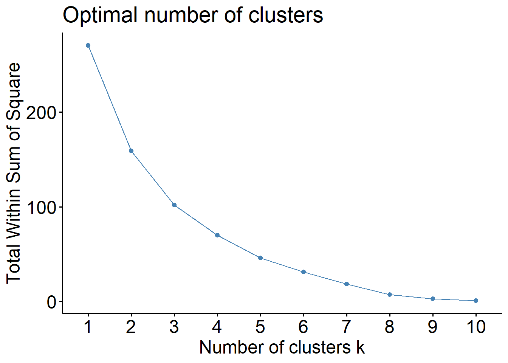
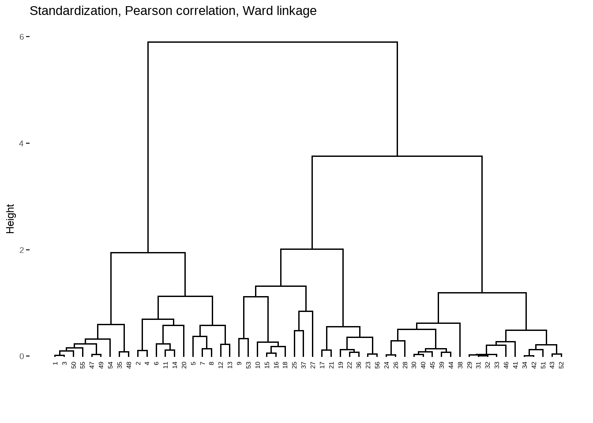
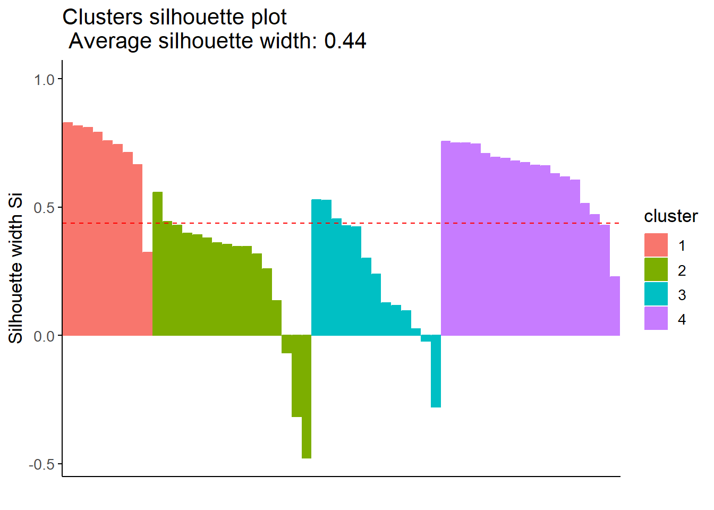
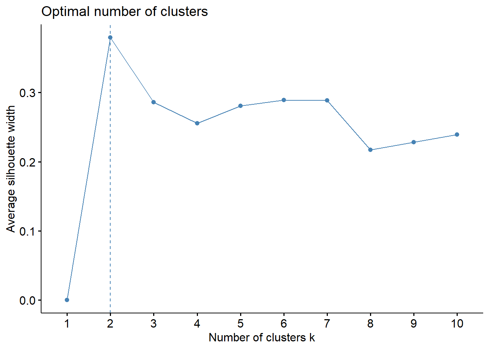
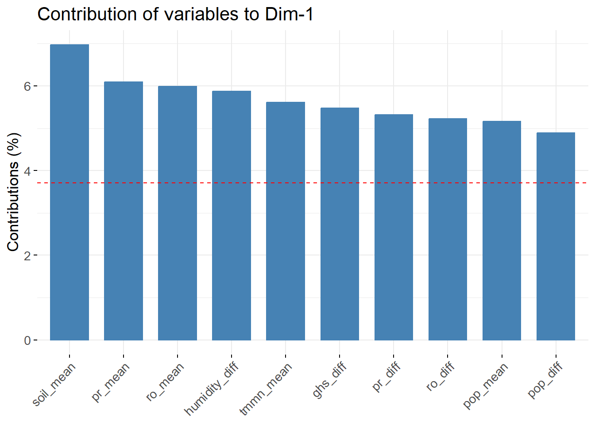
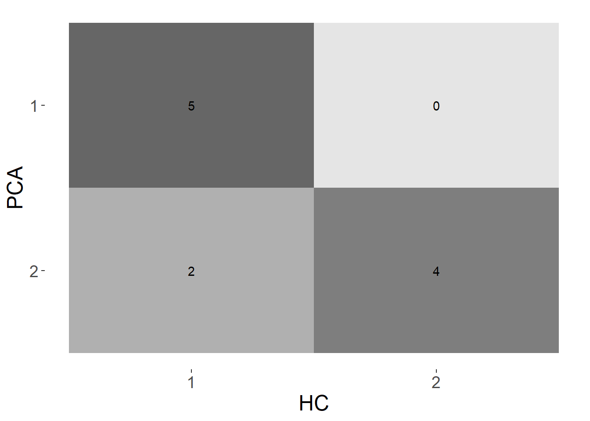
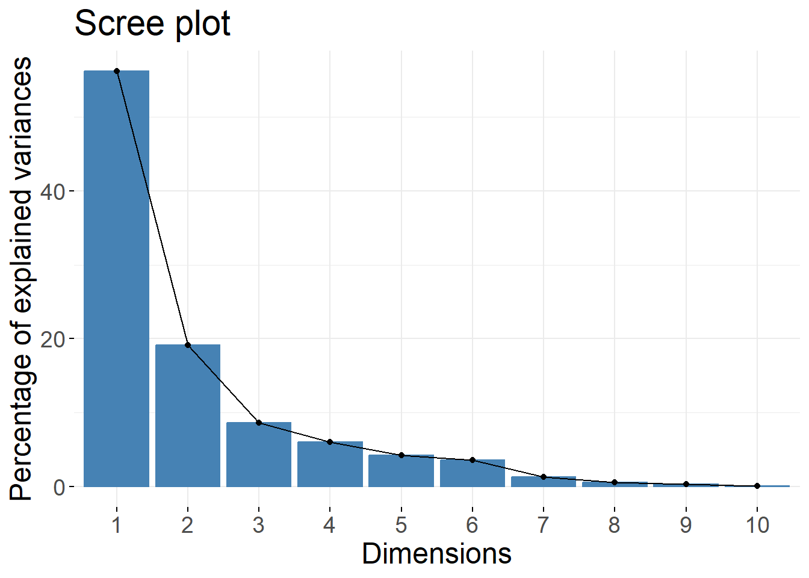

Stratification and sampling️ of population centers in Loreto, Peru 🎲✨
1 Introduction
This document describes the methodology carried out for the stratification and selection of population centers in Loreto for drone surveillance. This activity is part of the the Harmonize project: Harmonisation of spatio-temporal multi-scale data for health in climate change hotspots in the Peruvian Amazon (SIDISI 209821), in collaboration with the Barcelona Supercomputing Center.
The Harmonize project has the following objectives:
Geo-location of cases collected by passive surveillance from the Peruvian Ministry of Health (MINSA) through the Center for Disease Control and Prevention (CDC-Peru) in the study area using GPS devices.
Identify potential mosquito breeding sites based on new longitudinal ground survey data and using drone surveillance.
Collect data from weather stations, satellite imagery, ambient acoustic sounds and air pollution to calibrate and reduce the spatial resolution of Earth observation data sets.
Determine the impact of the use of these new technologies on infectious disease reduction interventions carried out by the Dirección Regional de Salud (DIRESA) of Loreto.
The methodology described here corresponds to the second objective above. Since we cannot map the whole study area of Loreto, our approach was to characterize the population centers in Loreto according to the incidence of relevant diseases in the area (Malaria, Dengue and Leptospirosis) and meteorological, environmental and human intervention variables (temperature, precipitation, soil moisture, deforestation, etc.) and then use this variables to create sampling strata using clustering techniques. Finally, we randomly sampled a number of the population centers from each stratum proportional to the stratum size.
2 Dataset
For each population center, we gathered records on the following fields:
- UBIGEO, which is the official identification code of the population centers used by the Instituto Nacional de Estadística e Informática (INEI).
- Official name .
- Latitude and longitud.
- Cumulative incidence of malaria, dengue and leptospirosis from epidemiological week 1 to 39 of 2022.
- Mean and difference of the annual mean values of the years 2010 and 2021 of the following variables:
- Precipitation accumulation (mm),
- Runoff (mm),
- Soil moisture (mm),
- Maximum temperature (°C),
- Minimum temperature (°C),
- Total evapotranspiration (kg/m2),
- Specific humidity (kg/kg),
- Deforestation area (km2).
- Mean and difference of the annual values of the years 2010 and 2020 of the following variables:
- Population density from WorldPop and
- Human settlement data from the Global Human Settlement Layer (GHSL).
- Mean and difference of the annual mean values from years 2014 and 2021 of the nighttime data from the Visible Infrared Imaging Radiometer Suite (VIIRS).
We can take a look at the data in the following table:
Show code
# Load necessary packages
library(dplyr, quietly = TRUE)
library(factoextra, quietly = TRUE)
library(cluster, quietly = TRUE)
library(leaflet, quietly = TRUE)
# Read dataset
dataset = readr::read_csv("data/processed/sample-10.csv", col_types = "ccd")
# Display dataset
dataset %>%
mutate(across(where(is.numeric), ~ round(.x, 2))) %>%
DT::datatable(
options = list(display = "compact", pageLength = 5, scrollX = TRUE)
)3 Stratification
The stratification of the population centers consisted of using the meteorological, environmental and human intervention variables to built groups of population centers with homogeneous characteristics. For this purpose, we tested two approaches. The first one consisted of performing an Agglomerative (“bottom-up”) Hierarchical Clustering (AHC) analysis using different distances, linkage methods, and number of clusters selection methods. On the second one, we used Principal Component Analysis (PCA) to reduce the dimension of the variables to one principal dimension and used it’s scores to create groups by quantile classification.
3.1 Agglomerative hierarchical clustering analysis
The AHC analysis consisted of two steps. First, we run several configurations the agglomerative nesting algorithms and selected the one which gave us the best hierarchical clustering (HC) structure. Secondly, from the selected hierarchical clustering structure, we calculated and examined a number of indices for determining the most appropriate number of clusters.
3.1.1 Chosing the hierarchical clustering structure
For this first step, we tested combinations of the following methods:
- Scaling method: Whether to use normalization (scaling from 0 to 1) or standardadization (subtracting the mean and dividing by the standard deviation).
- Distance: Whether to use euclidean distance or correlation-based distances, such as Pearson or Spearman correlation.
- Linkage method: Whether to use average, single, complete, Ward or weighted average linkage method.
For each combination, we run the agglomerative nesting algorithm and calculated the agglomerative coefficient (AC) which is a measure of the strength of the HC structure (Boehmke and Greenwell 2019, 421–22). For the 3 combinations of methods with larger AC, we also examined the resulting dendograms.
Show code
# Select variables for analysis
variables = select(dataset, malaria:malaria_diff)
# Function to scale data either by standardization or normalization
scale_data = function(data, method = "standardization") {
if (method == "standardization") {
data_scaled = mutate(data, across(everything(), ~as.numeric(scale(.x))))
}
if (method == "normalization") {
data_scaled = mutate(data, across(everything(), scales::rescale))
}
data_scaled
}
# Listing the configurations for the scaling, distance and linkage methods
scaling_method = c("standardization", "normalization")
dist_method = c("euclidean", "pearson", "spearman")
linkage_method = c("average", "single", "complete", "ward", "weighted")
# Table with all the combinations
design = tidyr::expand_grid(scaling_method, dist_method, linkage_method, variables)
# Calculate the agglomerative coefficient for each combination
agglomerative_coeff = design %>%
tidyr::nest(data = -c(scaling_method, dist_method, linkage_method)) %>%
mutate(
scaling = purrr::map2(data, scaling_method, ~scale_data(.x, method = .y)),
dist_mat = purrr::map2(scaling, dist_method, ~get_dist(.x, method = .y)),
tree = purrr::map2(dist_mat, linkage_method, ~agnes(.x, method = .y)),
ac = purrr::map(tree, ~.x$ac)
) %>%
tidyr::unnest(ac) %>%
arrange(-ac)The best 3 HC structures according to the AC were the following:
Show code
# Display the best 3 structures
agglomerative_coeff %>%
slice_head(n = 3) %>%
select(-c(data, scaling, dist_mat, tree)) %>%
mutate(across(where(is.character), stringr::str_to_title)) %>%
mutate(across(where(is.numeric), ~round(.x, 4))) %>%
DT::datatable(
colnames = c("Scaling", "Distance", "Linkage", "AC"),
options = list(dom = 't')
)The difference of the AC values are almost negligible. Consequently, we examined the dendograms:
Show code
# Function to plot a dendogram
dendogram = function(row, title) {
dendogram <- fviz_dend(agglomerative_coeff$tree[[row]], main = title) +
theme(text = element_text(size = 18))
dendogram
}Show code
dendogram(1, "Standardization, Spearman correlation, Ward linkage")
Show code
dendogram(2, "Normalization, Pearson correlation, Ward linkage")
Show code
dendogram(3, "Standardization, Pearson correlation, Ward linkage")
After inspecting the dendrograms, we chose the first HC structure as it seemed to form more homogeneous groups with relatively similar sizes for the different height values.
3.2 Determining the number of clusters
We calculated and plotted the average silhouette width, total within sum of squares and gap statistic for a range of 1 to 10 number of clusters and examined the optimal number of cluster for each criteria. We defined a range of numbers of clusters that met or near met the optimal criteria and then for each one of them we used PCA to visualize the clusters in 2 dimensions to evaluate how well the groups were formed. In addition, the individual silhouette index of each observation was calculated and plotted to assess if there were observations that might have been misclustered.
3.2.1 Evaluation of the criteria of the optimal number of clusters
Show code
# Function to plot optimal number of clusters plot for a certain criteria
nbclust_plot = function(data, method, ...) {
nbclust <- fviz_nbclust(
data, hcut, hc_func = "agnes", hc_method = "ward.D2",
c_metric = "spearman", method = method, ...
) + theme(text = element_text(size = 18))
nbclust
}
# Scale variables using standardization
variables_std = mutate(variables, across(everything(), ~as.numeric(scale(.x))))Show code
set.seed(2022)
nbclust_plot(variables_std, "silhouette")
Show code
nbclust_plot(variables_std, "wss")
Show code
set.seed(2022)
nbclust_plot(variables_std, "gap_stat", verbose = FALSE)
From these plots, we determined that the optimal number of cluster may be between 2 and 4 clusters.
3.2.2 Clusters plots
Next, we plotted the clusters in a plane using PCA for 2, 3 and 4 clusters.
Show code
# Function to cut tree
cut_tree = function(data, k) {
tree = hcut(
data, k = k, hc_func = "agnes", hc_method = "ward.D2",
hc_metric = "spearman"
)
tree
}
# Function to generate cluster plot
cluster_plot = function(tree) {
cluster = fviz_cluster(tree, ggtheme = theme_classic()) +
geom_vline(xintercept = 0, linetype = "dashed") +
geom_hline(yintercept = 0, linetype = "dashed") +
theme(text = element_text(size = 18))
cluster
}Show code
tree_2 = cut_tree(variables_std, 2)
cluster_plot(tree_2)
Show code
tree_3 = cut_tree(variables_std, 3)
cluster_plot(tree_3)
Show code
tree_4 = cut_tree(variables_std, 4)
cluster_plot(tree_4)
In the case of 2 clusters, the groups seem to be defined according to whether the scores of the observations on the first dimension are positive or negative. In the case of 3 clusters, the group with negative scores on the first dimension is divided if the scores on the second dimension are positive and negative. Finally, in the case of 4 clusters, the groups seem to be defined according to their belonging to one of the 4 quadrants.
3.2.3 Individual silhouette widths
Next, we plotted the individual silhouette width for the observations grouped in 2, 3 and 4 clusters.
Show code
# Function to plot individual silhouette widths
silhouette_plot = function(tree) {
ind_silhouette <- tree %>%
fviz_silhouette(ggtheme = theme_classic(), print.summary = FALSE) +
theme(text = element_text(size = 18))
ind_silhouette
}Show code
silhouette_plot(tree_2)
Show code
silhouette_plot(tree_3)
Show code
silhouette_plot(tree_4)
We see that with 2 clusters we obtain a greater average silhouette width (0.49), followed by 4 clusters (0.44) and lastly the case with 3 clusters (0.43). The least number of observations possibly misclustered is obtained with 3 clusters (2), followed by 2 clusters (3), and lastly the case with 4 clusters (5).
3.2.4 HC groups on maps
As an additional step, for a number of clusters of 2, 3 and 4, we plotted the population centers (polygon centroids) on a map coloured by group to see their spatial distribution.
Show code
# Create table with the groups
dataset_clustering = dataset %>%
mutate(
hc_group_2 = as.factor(tree_2$cluster),
hc_group_3 = as.factor(tree_3$cluster),
hc_group_4 = as.factor(tree_4$cluster)
)
# Function to plot a map with the clusters
cluster_map = function(data, palette, group_var) {
values = pull(data, {{group_var}})
map = dataset_clustering %>%
sf::st_as_sf(coords = c("lon", "lat"), crs = 4326) %>%
leaflet() %>%
addTiles(group = "OpenStreetMap") %>%
addProviderTiles(provider = providers$CartoDB, group = "CartoDB") %>%
addProviderTiles(provider = providers$Esri.WorldImagery, group = "Satelital") %>%
addCircleMarkers(
popup = dataset$population_center, color = ~palette(values),
opacity = 1, radius = 0.1, fillOpacity = 0.5
)%>%
addLayersControl(baseGroups = c("CartoDB", "OpenStreetMap", "Satelital")) %>%
addLegend(
title = "Cluster", pal = palette, values = values, opacity = 1,
position = "bottomright"
)
map
}Show code
# Palette for 2 clusters
palette_hc_2 = colorFactor(
palette = "viridis", domain = dataset_clustering$hc_group_2
)
# Plot cluster map
cluster_map(dataset_clustering, palette_hc_2, hc_group_2)Show code
# Palette for 3 clusters
palette_hc_3 = colorFactor(
palette = "viridis", domain = dataset_clustering$hc_group_3
)
# Plot cluster map
cluster_map(dataset_clustering, palette_hc_3, hc_group_3)Show code
# Palette for 4 clusters
palette_hc_4 = colorFactor(
palette = "viridis", domain = dataset_clustering$hc_group_4
)
# Plot cluster map
cluster_map(dataset_clustering, palette_hc_4, hc_group_4)We see that the groups seem to divide longitudinally, showing a strong spatial component driving the separation between them.
3.3 Principal components analysis
Principal component analysis (PCA) was used as an alternative method for clustering. Our approach was to use the principal component to build an aggregate index of all the variables considered. Then, the scores of the populated centers on this principal component were grouped into different categories according to the quantiles of the distribution. In order to compare this approach with the results of hierarchical clustering, we tested with 2 (50th quantile), 3 (33th and 66th quantiles) and 4 (25th, 50th and 75th quantiles) groups.
Show code
# Perform PCA
pca = FactoMineR::PCA(variables_std, graph = FALSE)3.3.1 Scree plot
After having performed the PCA, we plotted the scree plot to check the percentage of explained variance each component or dimension.
Show code
pca %>%
fviz_screeplot() +
theme(text = element_text(size = 18))
We see that the first component explain approximately 50% of the variance in the data. This is not such a high value, meaning that the variables do not seem to be strongly linearly correlated. Still, 50% is an acceptable value in practice.
3.3.2 Contribution plot
Next, we plotted the top 10 variables according to their contribution to the first component.
Show code
pca %>%
fviz_contrib(choice = "var", axes = 1, top = 10) +
theme(text = element_text(size = 18))
We see that the soil moisture, precipitation and runoff variables are the ones that contribute the most to explaining the first component.
3.3.3 Coordinate plane
Now, we plotted the population centers on a coordinate plane using the first and second components.
Show code
pca %>%
fviz_pca_ind() +
theme(text = element_text(size = 18))
As in the @ref(clusters-plots), we see that the variability of the points is distributed mostly over the first component (X axis).
3.3.4 PCA groups on maps
Finally, we created the groups dividing the population centers according to the quantiles of the scores on the principal component. Then we plotted the population centers on maps for 2, 3 and 4 groups.
Show code
# Get scores
pca_results = get_pca_ind(pca)
scores = pca_results$coord
# Create groups by quantile categorization
dataset_strata = dataset_clustering %>%
mutate(pca_score = scores[, 1]) %>%
mutate(
pca_group_2 = cut(
pca_score, breaks = quantile(pca_score, c(0, .5, 1)),
labels = as.character(rev(1:2)),
include.lowest = TRUE
),
pca_group_3 = cut(
pca_score, breaks = quantile(pca_score, c(0, .33, .66, 1)),
labels = as.character(rev(1:3)),
include.lowest = TRUE
),
pca_group_4 = cut(
pca_score, breaks = quantile(pca_score, c(0, .25, .5, .75, 1)),
labels = as.character(rev(1:4)),
include.lowest = TRUE
)
) %>%
mutate(across(pca_group_2:pca_group_4, forcats::fct_rev))Show code
# Palette for 2 groups
palette_pca_2 = colorFactor(
palette = "viridis", domain = dataset_strata$pca_group_2
)
# Plot cluster map
cluster_map(dataset_strata, palette_pca_2, pca_group_2)Show code
# Palette for 3 groups
palette_pca_3 = colorFactor(
palette = "viridis", domain = dataset_strata$pca_group_3
)
# Plot cluster map
cluster_map(dataset_strata, palette_pca_3, pca_group_3)Show code
# Palette for 4 groups
palette_pca_4 = colorFactor(
palette = "viridis", domain = dataset_strata$pca_group_4
)
# Plot cluster map
cluster_map(dataset_strata, palette_pca_4, pca_group_4)Geographically, the PCA groups seem to be distributed very similarly with the HC groups.
3.4 Comparing HC and PCA
We assessed how strong was the agreement between the HC method and PCA method on the grouping of the population centers, for 2, 3 and 4 groups. Confusion matrices and the Kappa statistic were used for this analysis.
3.4.1 Confusion matrices
Show code
dataset_strata %>%
yardstick::conf_mat(hc_group_2, pca_group_2, dnn = c("PCA", "HC")) %>%
autoplot(type = "heatmap") +
theme(text = element_text(size = 18))
Show code
dataset_strata %>%
yardstick::conf_mat(hc_group_3, pca_group_3, dnn = c("PCA", "HC")) %>%
autoplot(type = "heatmap") +
theme(text = element_text(size = 18))
Show code
dataset_strata %>%
yardstick::conf_mat(hc_group_4, pca_group_4, dnn = c("PCA", "HC")) %>%
autoplot(type = "heatmap") +
theme(text = element_text(size = 18))
Show code
# Get kappa statistic
kap_2 = yardstick::kap(dataset_strata, hc_group_2, pca_group_2)
kap_3 = yardstick::kap(dataset_strata, hc_group_3, pca_group_3)
kap_4 = yardstick::kap(dataset_strata, hc_group_4, pca_group_4)From the confusion matrices it is evident a strong agreement between the HC method and the PCA method.The agreement is stronger in the case of 2 clusters (kappa = 0.65), followed by the case of 3 clusters (kappa = 1) and lastly the case of 4 clusters (kappa = 0.4).
Finally, we opted to work with 4 clusters because this number gives us a greater spatial heterogeneity of populated centers.
4 Sampling
Having chosen the number of clusters, we draw a random sample from each of them proportional to their size to obtain a sample size of no less than 10 or 20 population centers.
Show code
# Sample 20 population centers
set.seed(2022)
sampling_20 = dataset_strata %>%
group_by(hc_group_4) %>%
slice_sample(prop = 0.43) %>%
ungroup()
# Sample 10 population centers
set.seed(2022)
sampling_10 = dataset_strata %>%
group_by(hc_group_4) %>%
slice_sample(prop = 0.23) %>%
ungroup()Next, we plot the samples in a map to see their geographical distribution.
Show code
# Coordinates of the full dataset
full_dataset = dataset_strata %>%
sf::st_as_sf(coords = c("lon", "lat"))
# Coordinates of the 10 samples
sample_10_dataset = sampling_10 %>%
sf::st_as_sf(coords = c("lon", "lat"))Warning in min(cc[[1]], na.rm = TRUE): ningún argumento finito para min;
retornando InfWarning in min(cc[[2]], na.rm = TRUE): ningún argumento finito para min;
retornando InfWarning in max(cc[[1]], na.rm = TRUE): ningun argumento finito para max;
retornando -InfWarning in max(cc[[2]], na.rm = TRUE): ningun argumento finito para max;
retornando -InfShow code
# Coordinates of the 20 samples
sample_20_dataset = sampling_20 %>%
sf::st_as_sf(coords = c("lon", "lat"))
# Function to plot the samples on a map
sample_map = function(data, palette, group_var) {
values = pull(data, {{group_var}})
map = data %>%
leaflet() %>%
addTiles(group = "OpenStreetMap") %>%
addProviderTiles(provider = providers$CartoDB,group = "CartoDB") %>%
addProviderTiles(provider = providers$Esri.WorldImagery,group = "Satelital") %>%
addCircleMarkers(
data = full_dataset, opacity = 1, radius = 0.1, fillOpacity = 0.5,
color = "lightgray"
) %>%
addCircleMarkers(
popup = data$population_center, color = ~palette(values),
opacity = 1, radius = 0.1, fillOpacity = 0.5
)%>%
addLayersControl(baseGroups = c("CartoDB","OpenStreetMap", "Satelital")) %>%
addLegend(
title = "Cluster", pal = palette, values = values, opacity = 1,
position = "bottomright"
)
map
}Show code
# Palette for 10 samples
palette_10 = colorFactor(
palette = "viridis", domain = sample_10_dataset$hc_group_4
)
# Map the 10 samples
sample_map(sample_10_dataset, palette_10, hc_group_4)Show code
# Palette for 20 samples
palette_20 = colorFactor(
palette = "viridis", domain = sample_20_dataset$hc_group_4
)
# Map the 20 samples
sample_map(sample_20_dataset, palette_20, hc_group_4)